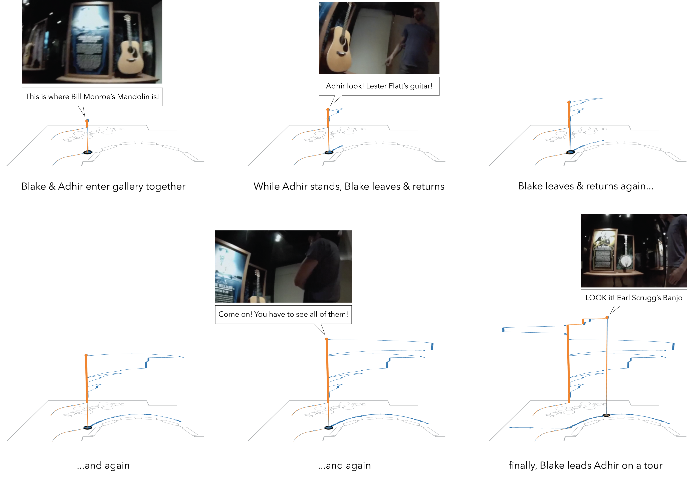

Figure 3. Annotated IGS screenshot showing the movement of the teacher’s hands as they unfold upwards in a space-time view over the two minute activity. In this space-time view, the z-axis encodes time, and the x/y axes correspond to the background image, which is tilted in 3D perspective. Anonymized animation video available at: here
